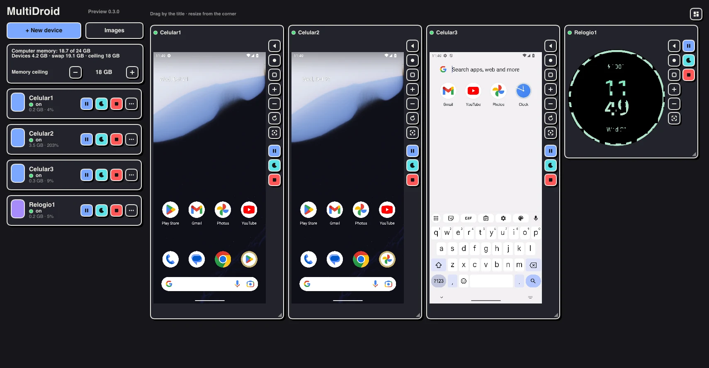
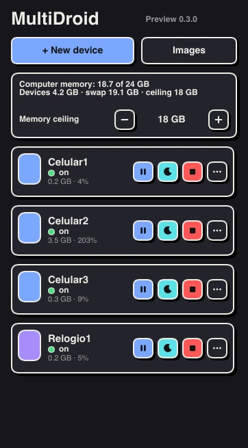

Every Android you need, on one desk.
MultiDroid runs the official Android Emulator without its windows and lays your devices out on a single desk on your Mac, and now in preview on Windows and Linux: phones, a tablet, a foldable and a round watch, each with its own accounts.
- Download for MacVersion 0.2 · 12 MB .dmg · macOS 26, Apple Silicon
- Download for WindowsPreview 0.3 · 9 MB installer · Windows 10 and 11, x86_64
- Download for LinuxPreview 0.3 · 15 MB .deb · Debian, Ubuntu, x86_64
Linux also as .rpm (Fedora, openSUSE) and .AppImage (any distribution). All versions
Free and open source (GPL-3.0). The Mac app is signed and notarized by Apple; version 0.2 is in Brazilian Portuguese. The Windows and Linux preview is version 0.3, in English and Portuguese: it is not signed yet, so Windows may show a SmartScreen warning the first time. On Windows it needs the Windows Hypervisor Platform turned on. Source on GitHub

What it is for.
MultiDroid is for anyone who needs more than one Android at a time and does not want a drawer full of phones or a pile of loose emulator windows.
Several accounts of the same app
Social media managers, creators and shops can keep each account on its own device, signed in and side by side, and switch with a glance instead of logging out and in.
Testing an app on every format
Developers can see the same app on a phone, a tablet, a foldable and a watch at once, and pause or duplicate a device in a second.
The real app on your Mac
When a service only works properly in its Android app, with its notifications, you can keep it open on the Mac next to your work instead of reaching for the phone.
One panel for everything that is on.
Each device shows its state, memory and CPU live, next to your Mac's memory. You set a ceiling for the devices; above it, MultiDroid hibernates the one you have left alone longest. A hibernated device keeps its last screen on the desk and wakes with a click.
Power on, pause, hibernate and switch off one device or a whole group at once.

Arrange the desk your way.
Free grid
Drag a device by its title and resize it by the corner, on a 24-column grid. Or let MultiDroid arrange them, all together or by group.
One desk per window
Open another desk with ⌘N and keep work and personal accounts apart. Hide the panel with ⌘0.
Controls on every frame
Back, home, recents, volume, rotate, type, screenshot, pause, hibernate and switch off, right beside each screen.
Copies cost nothing
Duplicate a device in an instant. The copy uses APFS clonefile, so it takes no disk space until the two start to differ.
No Android Studio needed.
MultiDroid downloads the emulator and the arm64 system images, Android 11 and later, straight from the official Android repository. It shows the license, checks each file against the published SHA-1, and updates with devices still on. You do not need Android Studio, Java or adb. If you already have images in Android Studio, it imports them.
- Devices
- Phone, tablet, foldable and a round watch
- Default image
- Android 13
- Memory
- About 4.5 GB per phone while it is on
- Your data
- Stays in ~/Library/Application Support/MultiDroid. No account, no server.
What it will not do.
- It does not automate anything in your accounts. Each device is yours to use by hand.
- It does not get around app integrity checks, so banking apps and some others will not open in an emulator.
- It does not bundle any Android system image. Each person downloads them from the official repository and accepts its license.
- It does not run on Intel Macs or on ARM Windows: the official emulator only exists for x86_64 there. On Windows and Linux it is still a preview.